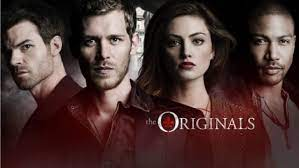

Series Overview
The Originals, a spin-off The Vampire Diaries centers on the Mikaelson siblings, otherwise known as the world's original vampires: Klaus (Joseph Morgan), Elijah (Daniel Gillies), and Rebekah (Claire Holt). Now Klaus must take down his protégé, Marcel (Charles Michael Davis), who is now in charge of New Orleans, in order to re-take his city, as he originally built New Orleans. Klaus departed from the city after being chased down by his father Mikael, while it was being constructed and Marcel took charge. As Klaus has returned after many years, his ego has provoked him to become the king of the city. "Every King needs an heir" says Klaus, accepting the unborn child. The child is a first to be born to a hybrid (part vampire, part werewolf) and a werewolf (Hayley).
The first season describes how Klaus's mystical child is going to be born and speaks of the threats that the Originals together must keep her safe from. It also details the war between vampires, witches and werewolves. The series ends with the child being born - a baby girl named Hope and being given to Rebekah to hide and protect after Klaus and Hayley fake her death to ensure her safety. Hayley is turned into a hybrid through Hope's blood after being murdered when giving birth.
The second season deals with the return of Mikael and Esther (Alice Evans), the Mikaelson siblings' parents, the arrival of Dahlia (Claudia Black), sister of Esther who threatens Hope's life as she wishes to take her and train her in her image as she did with Freya the supposedly-dead (Riley Voelkel), first-born daughter of Mikael and Esther who was said to die due to the cold winter, who shows up to help the Mikaelsons against Dahlia, having been kidnapped by her a few years after her birth after Esther promised Freya to her after birth but did not deliver.
The third season begins with the return of Lucien Castle (Andrew Lees), the first vampire sired by Klaus. Lucien tells Klaus about a prophecy that speaks of the Mikaelsons' downfall through friend, foe and family. In an effort to battle the Mikaelsons, Lucien works with Tristan de Martel (Oliver Ackland) and his sister Aurora - Klaus' first love(Rebecca Breeds), the first vampires sired by Elijah and Rebekah respectively. This season sees the death of Hayley's husband werewolf Jackson by Tristan and the death of Camille by Lucien. This season is also the first one to have a crossover episode with The Vampire Diaries with Stefan Salvatore coming to New Orleans seeking aid.
The fourth season takes place five years after the third season. Marcel, now an Upgraded Original Vampire due to Luciens creation, is ruling the city with an iron fist once more, while Hayley cures Freya, Elijah, Rebekah, and Kol (Nathaniel Buzolic). Meanwhile, Klaus suffers at Marcel's hand as the other Mikaelson siblings strive to save him. But the appearance of an evil ancient mystical menace called the Hollow (Blu Hunt) puts them all at risk, especially Hope who is targeted for her magical abilities and tribrid nature. It is later revealed in the season that the Hollow created the first werewolves which Hayley descends from. Hope is seven years old here and starting to develop magical abilities which Freya helps her control and use.
The fifth and final season of the series takes place seven years after the fourth season. Hope (Danielle Rose Russell), now a teenager, is studying at the Salvatore School for the Young and Gifted. The other Mikaelsons are living their own lives separately, trying to keep the Hollow at bay through their distance. But when Klaus and an amnesiac Elijah meet, Hayley goes missing and Nazi vampires emerge the family all return to New Orleans to fight these new brewing threats. This season also acts as a soft backdoor pilot through small incoorprations of the Salvatore School and future Legacies characters Alaric, Landon Kirby and the Saltzman twins as younger versions - Legacies is set 2 years later to the end of The Originals.